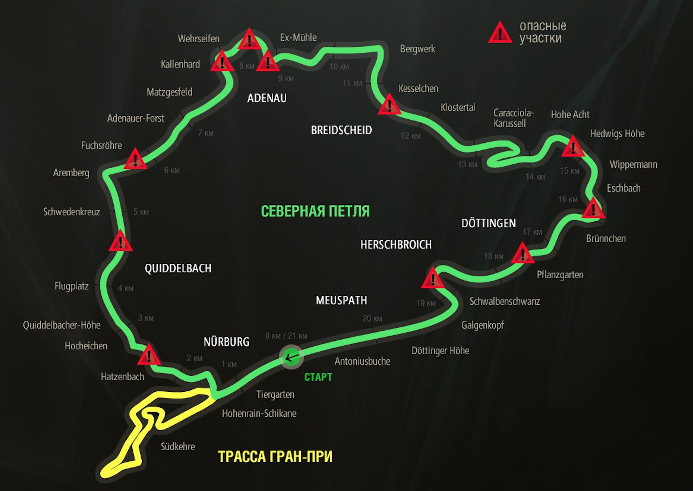

Факты
20 832 М
ДЛИНА СЕВЕРНОЙ ПЕТЛИ
73
ПОВОРОТА
620 М
НАИВЫСШАЯ ТОЧКА
320 М
НИЗШАЯ ТОЧКА
3-12
СМЕРТИ ТУРИСТОВ В ГОД
72
СМЕРТИ ГОНЩИКОВ
7000+
ВИДЕО АВАРИЙ НА YOUTUBE
Рекорды трассы Nurburgring Nordschleife
Стоимость
$ 29
ОДИН ТУРИСТИЧЕСКИЙ КРУГ
$ 1,550/ч
ЗАКРЫТЫЙ ТРЕК
$ 215
ЭВАКУАТОР
$ 35
ЗАМЕНА ОТБОЙНИКОВ
$ 90/30мин
ПОМОЩЬ МАШИНЫ БЕЗОПАСНОСТИ
*Нюрбургринг (Зеленый Ад) - самая
длинная и сложная гоночная трасса в мире